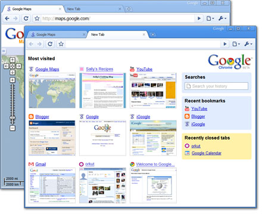

Starting Point · About Chrome · Firefox 3 · Google

Google Chrome
A new browser from Google · built for web apps · Windows first

2009 honesty: Public beta Sep 2, 2008 (Windows XP+) · stable 1.0 Dec 11, 2008 (Windows).
Multi-process architecture · omnibox · V8 · famous comic book.
Dec 8, 2009 class: Mac + Linux beta (“for the holidays”) + extensions beta lore —
Chrome leaves the Windows-only story late year. Still not mass default at year-start;
museum shell stays XP + IE 9. Product room only.
Logos: continuity 2008 pack + optional 2009 CAPTURE · educational reconstruction
Logos: continuity 2008 pack + optional 2009 CAPTURE · educational reconstruction
- Multi-process — one tab crash shouldn’t kill them all
- Omnibox — address bar + search
- Speed demos — V8 JavaScript lore
- Sparse UI · more room for the page
itt11-chrome · Windows-first · no real installer network